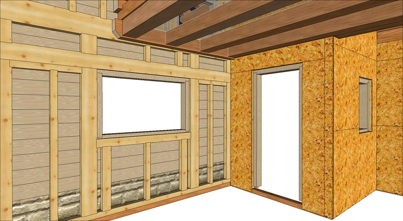

Sovralzi e case in legno al grezzo
Pannelli prefabbricati in X-lam o con struttura a telaio, progettati per montarsi in modo semplice, veloce e a secco.

Perché in legno
Negli ultimi cento anni la costruzione in legno è cambiata enormemente: gli elementi costruttivi e i materiali non hanno mai smesso di evolvere. Il legno massello è la base dei pannelli prefabbricati, in X-lam o con struttura a telaio, che oggi si usano in molti campi dell'edilizia.
Grazie a una progettazione curata, gli elementi prefabbricati si assemblano in modo semplice, veloce e asciutto. Uniscono la stabilità strutturale e il carattere delle costruzioni tradizionali ai vantaggi del legno.

Cosa vi portate a casa
Una struttura che si monta a secco e in poco tempo, e un materiale che lavora a favore di chi ci abita.
- Montaggio a secco
- Gli elementi arrivano pronti e si assemblano in modo semplice e veloce.
- Clima della casa
- Il legno regola naturalmente l'umidità degli ambienti: un clima bilanciato e confortevole in ogni stagione.
- Materia prima sostenibile
- Legno massello, la stessa base dei nostri tetti.
Due sistemi
Quale usare dipende dall'edificio e dal progetto: lo valutiamo dopo il rilievo.
- X-lam
- Pannelli massicci a strati di tavole incrociate: pareti e solai pieni, in legno.
- Telaio
- Una struttura di montanti e traversi in legno, chiusa da pannelli e riempita di isolante.

Raccontateci il lavoro
Bastano due righe: che lavoro è, in che comune e più o meno che misure. Se avete un progetto o delle foto, meglio ancora. Poi vi richiamiamo noi.
Telefono 0465 621159 · info@segheria-lombardi.it